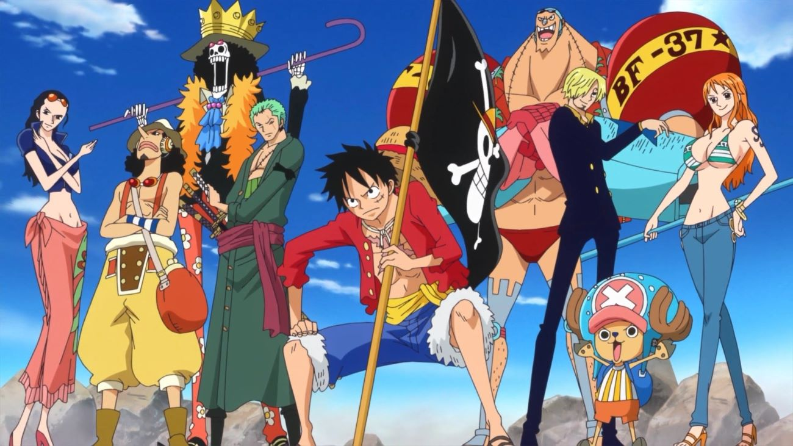

ONE PIECE
Synopsis
L'histoire de One Piece se déroule dans un monde fictif dominé par les océans, où certains pirates aspirent à une ère de liberté et d'aventure connue comme "l'âge d'or de la piraterie". Cette époque fut inaugurée à la suite des derniers mots prononcés par le roi des pirates, Gol D. Roger, surnommé Gold Roger avant son exécution. Roger annonce au monde que ses habitants étaient libres de chercher toutes les richesses qu'il avait accumulées durant sa vie entière, le One Piece.
Monkey D. Luffy un jeune garçon rêve de retrouver ce trésor légendaire et de devenir le nouveau "Roi des Pirates". Après avoir mangé un fruit du démon, il possède un pouvoir lui permettant de réaliser son rêve. Il lui faut maintenant trouver un équipage pour partir à l'aventure !
Qu'est ce que ça raconte ?
L'histoire suit les aventures de Monkey D. Luffy, un garçon dont le corps a acquis les propriétés du caoutchouc après avoir mangé par inadvertance un fruit du démon. Luffy part à l'aventure après sa rencontre avec Shanks le Roux, le capitaine d'un navire de pirates qui a passé un an dans son village et l'a sauvé d'un monstre marin en sacrifiant son bras gauche. Depuis, Luffy porte son chapeau de paille qu'il lui a offert pour marquer la promesse de devenir un grand pirate. Ce chapeau deviendra donc le symbole de son équipage. Luffy va donc partir a l'aventure avec pour premier objectif celui de constituer un équipage digne de ce nom qui l'aidera a atteindre son rêve mais bien des épreuves l'attende sur le chemin.
Pourquoi c'est bien ?
Le Manga One-Piece est le manga le plus vendu au monde pour différentes raisons comme notamment la richesse de son récit. L’histoire regorge de personnages, d’intrigue qui s’entremêle les unes avec les autres pour former un lore vraiment très conséquent. Au-delà du héros charismatique, une série doit également son succès aux alliés du héros, qui sont représenté ici par l’équipage de luffy. Ils sont tous haut en couleur et ont eux aussi un rêve à réaliser en dehors de celui de faire de leurs capitaine le roi des pirates.
One Piece a su jouer les cartes pour se révéler comme une véritable série pleine d’émotions. Très vite, vous allez vous attacher aux personnages. Vous prendrez rapidement l’habitude de rire à leurs côtés, à les pousser au combat et à les suivre durant leur périple. Mais One Piece, c’est aussi ces passés douloureux qui refont surface, ces âmes brisées ou qui se brisent, la mort de personnages attachants pour permettre à la série d’évoluer. Oui ! L’équipage du Chapeau de paille n’est pas que joie : ce sont aussi peines et pleurs.
Il y aurait bien d’autres explications pour expliquer le succès de ce manga mais ça c’est à vous de le découvrir en commençant One-Piece dès que possible !